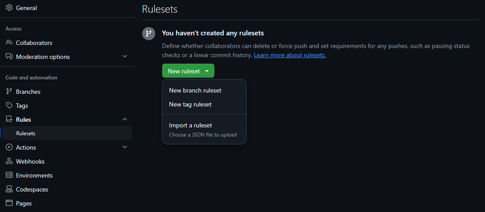
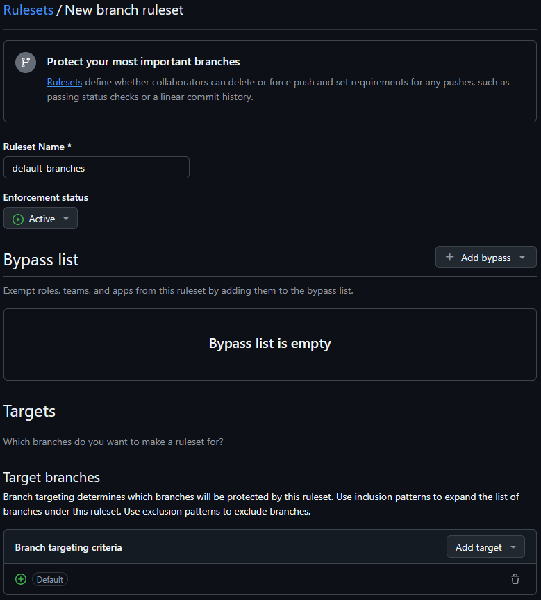

Développer une bibliothèque .NET Open Source
dotnet / GitHub / NuGet
En tant que mainteneur de plusieurs bibliothèques .NET pour mon travail, j'ai acquis une certaine expérience à ce sujet. Dans cette article, je vais expliquer ma procédure pour créer une bibliothèque .NET, allant de la création/configuration du dépôt sur GitHub à la publication sur NuGet.
1) Créer un dépot GitHub
Lors de la création d'un dépôt GitHub, il faut saisir les informations suivantes:
- Saisir dans "Repository Name" le nom de la bibliothèque
- Saisir dans "Description" une courte description de la bibliothèque
- Select "Public"
-
Dans "Initialize this repository with:"
- Cochez "Add a README file"
- Pour "Add .gitignore", sélectionnez "Visual Studio"
- Pour "Choose a license", sélectionnez "MIT License"
- Pour finir, cliquer sur le bouton "Create repository"
2) Initialiser la solution .NET
Les commandes suivantes permettent d'initialiser une solution .NET avec un projet de bibliothèque et son projet de test :
# Clone et prépare le dépôt git clone https://github.com/vernou/Vernou.Librairies.Example.git cd Vernou.Librairies.Example # Crée le dossier "src" pour ranger le code source des projets mkdir src cd src # Crée le projet de la bibliothèque dotnet new classlib --name Vernou.Librairies.Example # Crée le projet de test dotnet new xunit --name Vernou.Librairies.Example.Tests dotnet add Vernou.Librairies.Example.Tests reference Vernou.Librairies.Example dotnet add Vernou.Librairies.Example.Tests package Shouldly # Crée la solution dotnet new sln --name Vernou.Librairies.Example --format slnx dotnet sln add Vernou.Librairies.Example dotnet sln add Vernou.Librairies.Example.Tests # Vérfie que la solution compile et les tests passent dotnet test # Pousse les projets sur GitHub git add * git commit -m "Initialize the solution" git push
3) Mise en place de l'intégration continue
TODO
4) Configurer le dépot GitHub
Dans l'onglet "Settings" du dépôt, il faut configurer les options suivantes:
-
Dans "General":
-
Activer/Désactiver les fonctionnalités en fonction de vos besoins. Dans mon cas, c'est généralement:
- Issues
- Preserve this repository
- Discussions
-
Pour "Pull Requests":
- Autorisez uniquement la fusion "Squash"
- Cochez "Always suggest updating pull request branches"
- Cocher "Automatically delete head branches"
-
Activer/Désactiver les fonctionnalités en fonction de vos besoins. Dans mon cas, c'est généralement:
-
Dans "Rules > Rulesets":
-
Cliquer sur "New branch ruleset"
 - Saisir dans "Ruleset Name" "default-branches"
- Dans "Enforcement status", sélectionnez "Active"
-
Dans "Target branches", sélectionnez "Include default branch"
 -
Dans "Branch rules"
- Cocher "Restrict deletions"
- Cocher "Require linear history"
- Cocher "Require a pull request before merging" avec l'option "Require conversation resolution before merging"
- Cocher "Block force pushes"
- Cliquer sur "Create"
-
Cliquer sur "New branch ruleset"
One possible testing approach is to swap your production database with SQLite, effectively using it as a testing "fake".
Une approche possible pour tester consiste à substituer le système de gestion de base de données (SGBD) par SQLite, en l'utilisant comme une base de données factice.